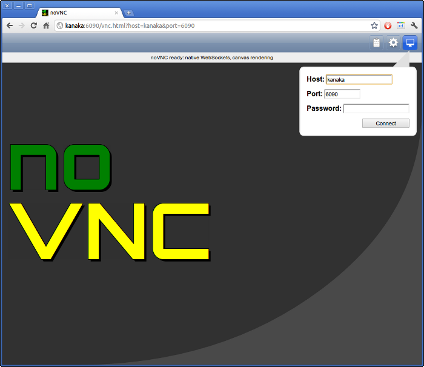
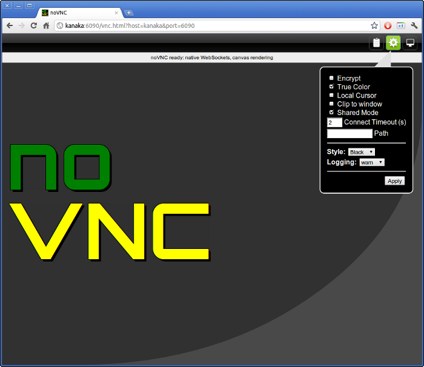
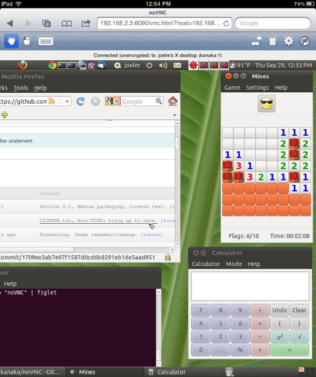
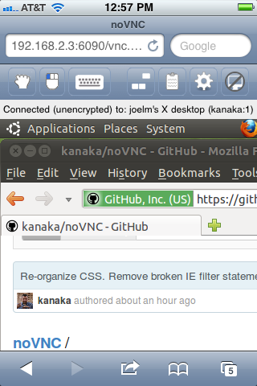

See homepage and
README for more info.

The default theme.

The black/green theme showing the settings menu.

Connected to Xtightvnc running an Ubuntu Gnome desktop with
firefox, gnomine, gnome-terminal, and AisleRiot/sol (Klondike). Yes,
that's firefox running "inside" of Chrome. The hand button in the
upper left appears when using viewport cliping. Clicking the hand
enables viewport panning.

Connected to the same remote system using an iPad 2. Notice the mouse and
keyboard buttons in the upper left for selecting the active mouse
button and for toggling the on-screen keyboard.

Flipping the iPad to portrait mode while connected. noVNC
automatically adjusts.

Connected to the same remote system using an iPhone 3G. It's slow and
the screen real-estate is constrained (lots of viewport panning) but
noVNC on the iPhone is fully functional.
A very quick 42 second demo. The version of noVNC shown here is over
a year old. The current version has a much better interface and
styling.
A longer (2:15) demo that shows downloading the noVNC repository, installing tightvncserver, creating an SSL certificate, and some of the noVNC settings that are available. Again this is an old version of noVNC.